대기환경산업기사 (2020-08-22 기출문제)
1과목: 대기오염개론
1. 유효굴뚝높이 60m에서 SO2가 980000m3/day, 1200ppm으로 배출되고 있다. 이 때 최대지표농도(ppb)는? (단, sutton의 확산식을 사용하고, 풍속은 6m/s. 이 조건에서 확산계수 Ky = 0.15, Kz = 0.18이다.)
- 96
- 177
- 361
- 485
(정답률: 57%)

2. 다음 중 2차 대기오염물질과 가장 거리가 먼 것은?
- NOCl
- H2O2
- PAN
- NaCl
(정답률: 81%)
3. 국지풍에 관한 설명으로 옳지 않은 것은?
- 낮에 바다에서 육지로 부는 해풍은 밤에 육지에서 바다로 부는 육풍보다 보통 더 강하다.
- 열섬효과로 인해 도시의 중심부가 주위보다 고온이 되므로 도시 중심부에서는 상승기류가 발생하고 도시 주위의 시골(전원)에서 도시로 부는 바람을 전원풍이라 한다.
- 고도가 높은 산맥에 직각으로 강한 바람이 부는 경우에는 산맥의 풍하쪽으로 건조한 바람이 불어내리는데 이러한 바람을 휀풍이라 한다.
- 곡풍은 경사면 → 계곡 → 주계곡으로 수렴하면서 풍속이 가속화되므로 낮에 산위쪽으로 부는 산풍보다 보통 더 강하다.
(정답률: 70%)
4. 오존 및 오존층에 관한 설명으로 옳지 않은 것은?
- 오존은 약 90% 이상이 고도 10~50km 범위의 성층권에 존재하고 있다.
- 오존층에서는 오존의 생성과 소멸이 계속적으로 일어나며 지표면의 생물체에 유해한 자외선을 흡수한다.
- 지구 전체의 평균오존량은 약 300Dobson 정도이고, 지리적 또는 계략적으로 평균치의 ±50% 정도까지 변화한다.
- CFCs는 독성과 활성이 강한 물질로서 대기중으로 배출될 경우 빠르게 오존층에 도달한다.
(정답률: 60%)
5. 실내공기오염물질인 라돈에 관한 설명으로 옳지 않은 것은?
- 무색, 무취의 기체로 폐암을 유발한다.
- 반감기는 3.8일 정도이고 호흡기로의 흡입이 현저하다.
- 토양, 콘크리트, 벽돌 등으로부터 공기 중에 방출된다.
- 자연계에는 존재하지 않으며, 공기에 비해 약 3배 정도 무겁다.
(정답률: 82%)
6. 다음 중 레일리이 산란(Rayleigh scattering)효과가 가장 뚜렷이 나타나는 조건은?
- 입자의 반경이 입사광선의 파장보다 훨씬 큰 경우
- 입자의 반경이 입사광선의 파장보다 춸씬 작은 경우
- 입자의 반경과 입사광선의 파장이 비슷한 크기인 경우
- 입자의 반경과 입사광선 파장의 크기가 정확히 일치하는 경우
(정답률: 68%)
7. 대류권내 공기의 구성물질을 [보기]와 같이 분류할 때 다음 중 “쉽게 농도가 변하는 물질”에 해당하는 것은?
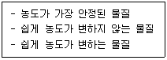
- Ne
- Ar
- NO2
- CO2
(정답률: 68%)
8. 다음 [보기]가 설명하는 연기 모양으로 옳은 것은?
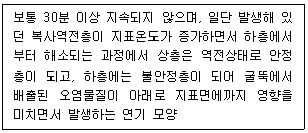
- Looping형
- Fanning형
- Trapping형
- Fumigation형
(정답률: 66%)
9. 공업지역의 먼지 농도 측정을 위해 여과지를 이용하여 0.45m/s 속도로 3시간 포집한 결과 깨끗한 여과지에 비해 사용한 여과지의 빛전달율이 66%인 경우 1000m당 Coh는 약 얼마인가?
- 3.0
- 3.2
- 3.7
- 4.0
(정답률: 58%)
10. 다음 중 지구온난화의 주 원인물질로 가장 적합하게 짝지어진 것은?
- CH4 - CO2
- SO2 - NH3
- CO2 - HF
- NH3 - HF
(정답률: 80%)
11. 다음 [보기]가 설명하는 오염물질로 옳은 것은?
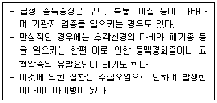
- As
- Hg
- Cr
- Cd
(정답률: 76%)
12. 다음은 풍향과 풍속의 빈도 분포를 나타낸 바람장미(wind rose)이다. 여기서 주풍은?
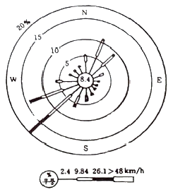
- 서풍
- 북동풍
- 남동풍
- 남서풍
(정답률: 82%)
13. 다음 중 SO2에 대한 저항력이 가장 강한 식물은?
- 콩
- 옥수수
- 양상추
- 사루비아
(정답률: 78%)
14. 다음 각 대기오염물질의 영향에 관한 설명으로 옳지 않은 것은?
- O3는 DNA, RNA에 작용하여 유전인자에 변화를 일으키며, 염색체 이상이나 적혈구의 노화를 가져온다.
- 바나듐은 인체에 콜레스테롤, 인지질 및 지방분의 합성을 저해하거나 다른 영양물질의 대사 장해를 일으키기도 한다.
- 유기수은은 무기수은과 달리 창자로부터의 배출은 적고, 주로 신장으로 배출되며, 혈압강하가 주된 증상이다.
- 납중독은 조혈기능 장애로 인한 빈혈을 수반화고, 신경계통을 침해하며, 더 나아가 시신경 위축에 의한 실명, 사지의 경련도 일으킬 수 있다.
(정답률: 72%)
15. 연소과정에서 방출되는 NOx 배출가스 중 NO : NO2의 계략적인 비는 얼마 정도인가?
- 5 : 95
- 20 : 80
- 50 : 50
- 90 : 10
(정답률: 80%)
16. 벨기에의 뮤즈계곡 사건, 미국의 도노라사건 및 런던 스모그 사건의 공통적인 주요 대기오염 원인물질로 가장 적합한 것은?
- SO2
- O3
- CS2
- NO2
(정답률: 78%)
17. 흑체의 최대에너지가 복사될 때 이용되는 파장(λm : μm)과 흑체의 표면온도(T : 절대온도)와의 관계를 나타내는 다음 복사이론에 관한 법칙은?
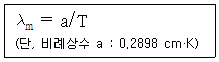
- 알베도의 법칙
- 플랑크의 법칙
- 비인의 변위법칙
- 스테판-볼츠만의 법칙
(정답률: 71%)
18. 다음 각 오염물질에 대한 지표식물로 가장 거리가 먼 것은?
- PAN : 시금치
- 황화수소 : 토마토
- 아황산가스 : 무궁화
- 불소화합물 : 글라디올러스
(정답률: 65%)
19. 보통 가을부터 봄에 걸쳐 날씨가 좋고, 바람이 약하며, 습도가 적을 때 자정 이후부터 아침까지 잘 발생하고, 낮이 되면 일사로 인해 지면이 가열되면 곧 소멸되는 역전의 형태는?
- Lofting inversion
- Coning inversion
- Radiative inversion
- Subsidence inversion
(정답률: 68%)
20. 과거의 역사적으로 발생한 대기오염사건 중 런던형 스모그의 기상 및 안정도 조건으로 옳지 않은 것은?
- 침강성 역전
- 바람은 무풍상태
- 기온은 4℃ 이하
- 습도는 85% 이상
(정답률: 79%)
2과목: 대기오염 공정시험 기준(방법)
21. 비분산적외선분광분석법에 관한 설명으로 옳지 않은 것은?
- 광원은 원칙적으로 중공음극램프를 사용하며 감도를 높이기 위하여 텅스텐램프를 사용하기도 한다.
- 대기 및 굴뚝 배출기체 중의 오염물질을 연속적으로 측정하는 비분산 정필터형 적외선 가스 분석계에 대하여 적용한다.
- 선택성 검출기를 이용하여 시료 중 특성성분에 의한 적외선의 흡수량 변화를 측정하여 시료 중 특성성분에 의한 적외선의 흡수량 변화를 측정하여 시료 중 들어있는 특정 성분의 농도를 측정한다.
- 광학필터는 시료가스 중에 간섭 물질가스의 흡수파장역의 적외선을 흡수제거하기 위하여 사용하며, 가스필터와 고체필터가 있는데 이것은 단독 또는 적절히 조합하여 사용한다.
(정답률: 61%)
22. 질산은 적정법으로 배출가스 중 시안화수소를 분석 할 때 사용되는 시약이 아닌 것은?
- 질산(부피분율 10%)
- 수산화소듐 용액(질량분율 2%)
- 아세트산(99.7%) (부피분율 10%)
- p-다이메틸아미노벤질리덴로다닌의 아세톤용액
(정답률: 57%)
23. 비분산적외선분석계의 장치구성에 관한 설명으로 옳지 않은 것은?
- 비교셀은 시료셀과 동일한 모양을 가지며 수소 또는 헬륨 기체를 봉입하여 사용한다.
- 시료셀은 시료가스가 흐르는 상태에서 양단의 창을 통해 시료광속이 통과하는 구조를 갖는다.
- 광학필터는 시료가스 중에 간섭 물질가스의 흡수파장역의 적외선을 흡수제거하기 위하여 사용한다.
- 검출기는 광속을 받아들여 시료가스 중 측정성분 농도에 대응하는 신호를 발생시키는 선택적 검출기 혹은 광학필터와 비선택적 검출기를 조합하여 사용한다.
(정답률: 62%)
24. 이온크로마토그래피의 장치 요건으로 옳지 않은 것은?
- 송액펌프는 맥동이 적은 것을 사용한다.
- 검출기는 분리관 용리액 중의 시료성분의 유무와 량을 검출하는 부분으로 일반적으로 전도도 검출기를 많이 사용한다.
- 써프렛서는 관형과 이온교환막형이 있으며, 관형은 음이온에는 스티롤계 강산형(H+)수지가, 음이온에는 스티롤계 강염기형(OH-)의 수지가 충진된 것을 사용한다.
- 용리액조는 이온성분이 잘 용출되는 재질로써 용리액과 공기와의 접촉이 효과적으로 되는 것을 선택하며, 일반적으로 실리카 재질의 것을 사용한다.
(정답률: 47%)
25. 대기오염공정시험기준상 시약, 표준물질, 표준용액에 관한 설명으로 옳지 않은 것은?
- 시험에 사용하는 표준물질은 원칙적으로 특급시약을 사용한다.
- 표준용액을 조제하기 위한 표준용 시약은 따로 규정이 없는 한 데시케이터에 보존된 것을 사용한다.
- 시험시약 중 따로 규정이 없고. 단순히 질산으로 표시했을 때는, 그 비중을 약 1.38, 농도는 60.0~62.0(%) 이상의 것을 뜻한다.
- 표준물질을 채취할 때 표준액이 정수로 기재되어 있는 경우에는 실험자가 환산하여 기재한 수치에 “약”자를 붙여 사용할 수 없다.
(정답률: 65%)
26. 대기오염공정시험기준 총칙에 관한 사항으로 옳지 않은 것은?
- 냉수는 15℃ 이하, 온수는 (60~70℃), 열수는 약 100℃를 말한다.
- 기체 중의 농도를 mg/m3로 표시 했을 때는 m3은 표준상태(0℃, 1기압)의 기체용적을 뜻하고 Sm3로 표시한 것과 같다.
- "냉후“(식힌 후)라 표시되어 있을 때는 보온 또는 가열 후 표준상태 온도까지 냉각된 상태를 뜻한다.
- 시험에 사용하는 물은 따로 규정이 없는 한 정제증류수 또는 이온교환수지로 정제한 탈염수를 사용한다.
(정답률: 61%)
27. 환경대기 중 위상차현미경법에 의한 석면먼지의 농도표시에 관한 설명으로 옳은 것은?
- 0℃, 1기압 상태의 기체 1mL 중에 함유된 석면섬유의 개수(개/mL)로 표시한다.
- 0℃, 1기압 상태의 기체 1μℓ 중에 함유된 석면섬유의 개수(개/μℓ)로 표시한다.
- 20℃, 1기압 상태의 기체 1mL 중에 함유된 석면섬유의 개수(개/mL)로 표시한다.
- 20℃, 1기압 상태의 기체 1μℓ 중에 함유된 석면섬유의 개수(개/μℓ)로 표시한다.
(정답률: 59%)
28. 다음은 환경대기 중 중금속화합물 동시분석을 위한 유도결합플라즈마분광법에 사용되는 용어 정의이다. ( )안에 알맞은 것은?
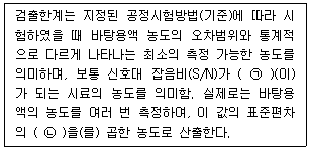
- ㉠ 1, ㉡ 2
- ㉠ 2, ㉡ 3
- ㉠ 5, ㉡ 10
- ㉠ 10, ㉡ 10
(정답률: 58%)
29. 굴뚝 배출가스 중 수은화합물을 냉증기원자흡수분광광도법으로 분석할 때 측정파장(nm)으로 옳은 것은?
- 193.7
- 253.7
- 324.8
- 357.9
(정답률: 49%)
30. 단면의 모양이 4각형인 어느 연도를 6개의 등면적으로 구분하여 각 측정점에서 유속과 굴뚝 건조 배출가스 중 먼지농도를 수동식으로 측정한 결과가 다음과 같았다. 이 때 전체 단면의 평균 먼지농도(g/Sm3)는?
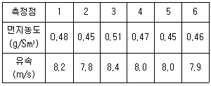
- 0.45
- 0.47
- 0.49
- 0.50
(정답률: 63%)
31. 환경대기 중 아황산가스 측정을 위한 파라로자닐린법(Pararosaniline Method)의 장치구성에 관한 설명으로 옳지 않은 것은?
- 필터는 0.8~2.0μm의 다공질막 또는 유리솜 필터를 사용한다.
- 흡입펌프는 유량조절기와 펌프사이에 적어도 0.7기압의 압력 차이를 유지하여야 한다.
- 분광광도계로 376nm에서 흡광도를 측정하고, 측정에 사용되는 스펙트럼폭은 50nm이어야 한다.
- 시료분산기는 외경 8mm, 내경 6mm, 및 길이 152mm의 유리관으로서 끝은 외경 0.3~0.8mm로 가늘게 만든 것을 사용한다.
(정답률: 56%)
32. 원자흡수분광광도법의 장치에 관한 설명으로 옳지 않은 것은?
- 아세틸렌-아산화질소 불꽃은 불꽃온도가 낮고 일부 원소에 대하여 높은 감도를 나타낸다.
- 램프점등장치 중 교류점등 방식은 광원의 빛 자체가 변조되어 있기 때문에 빛의 단속기(Chopper)는 필요하지 않다.
- 원자흡광분석용 광원은 원자흡광스펙트럼선의 선폭보다 좁은 선폭을 갖고 휘도가 높은 스펙트럼을 방사하는 중공음극램프가 많이 사용된다.
- 분광기(파장선택부)는 광원램프에서 방사되는 휘선스펙트럼 가운데서 필요한 분석선만을 골라내기 위하여 사용되는데 일반적으로 회절격자나 프리즘(Prism)을 이용한 분광기가 사용된다.
(정답률: 45%)
33. 다음은 환경대기 중 옥시던트 측정방법-중성요오드화 칼륨법(Determinnation of Oxidants – Neutral Buffered Potassium Iodide Method)의 적용범위이다. ( ) 안에 가장 적합한 것은?
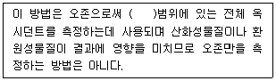
- 0.001 ~ 0.001 μmol/mol
- 0.001 ~ 0.01 μmol/mol
- 0.01 ~ 10 μmol/mol
- 100 ~ 1000 μmol/mol
(정답률: 62%)
34. 다음은 굴뚝 배출가스 중 시안화수소의 자외선/가시선 분광법(피리딘피라졸론법)에 관한 설명이다. ( )안에 알맞은 것은?(2021년 11월 개정된 규정 적용)
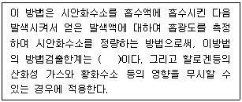
- 0.010ppm
- 0.016ppm
- 0.020ppm
- 0.032ppm
(정답률: 48%)
35. 원자흡수분광광도법(Atomic Absorption Spectrophotometry)에서 사용되는 용어로 옳지 않은 것은?
- 제로 가스(Zero Gas)
- 멀티 패스(Multi-path)
- 공명선(Resonance Line)
- 선프로파일(Line Profile)
(정답률: 60%)
36. 배출가스를 피토관으로 측정한 결과, 동압이 6mmH2O일 때 배출가스 평균 유속(m/s)은? (단, 피토관 계수 = 1.5, 중력가속도 = 9.8m/s2, 굴뚝 내 습한 배출가스 밀도 = 1.3kg/m3)
- 12.8
- 14.3
- 15.8
- 16.5
(정답률: 51%)
37. 굴뚝 배출가스 중 일산화탄소 분석방법으로 옳지 않은 것은?
- 정전위전해법
- 이온선택적정법
- 비분산적외선분석법
- 기체크로마토그래피
(정답률: 60%)
38. 배출가스 중의 질소산화물을 페놀디설폰산법으로 측정할 경우 사용하는 시료가스 흡수액으로 옳은 것은?
- 붕산용액
- 암모니아수
- 오르토톨리딘용액
- 황산+과산화수소+증류수
(정답률: 68%)
39. 가스상 물질 시료채취장치에 대한 주의사항으로 옳지 않은 것은?
- 가스미터는 100mmH2O 이내에서 사용한다.
- 습식가스미터를 이동 또는 운반할 때는 반드시 물을 뺀다.
- 시료가스의 양을 재기 위하여 쓰는 채취병은 미리 0℃ 때의 참부피를 구해둔다.
- 흡수병은 각 분석법에 공용사용을 원칙으로 하고, 대상 성분이 달라질 때마다 메틸 알콜로 3회 정도 씻은 후 사용한다.
(정답률: 63%)
40. 굴뚝 배출가스 중 먼지를 연속적으로 자동 측정하는 방법에서 사용되는 용어의 의미로 옳지 않은 것은?
- 검출한계 : 제로드리프트의 5배에 해당하는 지시치가 갖는 교정용입자의 먼지농도를 말한다.
- 균일계 단분산 입자 : 입자의 크기가 모두 같은 것으로 간주할 수 있는 시험용입자로서 실험실에서 만들어진다.
- 교정용입자 : 실내에서 감도 및 교정오차를 구할 때 사용하는 균일계 단분산 입자로서 기하평균 입경이 0.3~3μm인 인공입자로 한다.
- 응답시간 : 표준교정판(필름)을 끼우고 측정을 시작했을 때 그 보정치의 95%에 해당하는 지시치를 나타낼 때가지 걸린 시간을 말한다.
(정답률: 49%)
3과목: 대기오염방지기술
41. 유입공기 중 염소가스의 농도가 80000ppm이고, 흡수탑의 염소가스 제거효율은 80%이다. 이 흡수탑 3개를 직렬로 연결했을 때 유출공기 중 염소가스의 농도(ppm)는?
- 460
- 540
- 640
- 720
(정답률: 59%)
42. 전기집진장치의 집진율이 98%이고 집진시설에서 배출되는 먼지농도가 0.25 g/m3 일 때 유입되는 먼지농도(g/m3)는?
- 12.5
- 15.0
- 17.5
- 20.0
(정답률: 52%)
43. 기상농도와 액상농도의 평형관계를 나타내는 헨리법칙이 잘 적용되지 않는 기체는?
- O3
- N2
- CO
- Cl2
(정답률: 57%)
44. 휘발성 유기화합물과 냄새를 생물학적으로 제거하기 위해 사용하는 생물여과의 일반적특성으로 가장 거리가 먼 것은?
- 설치에 넓은 면적을 요한다.
- 습도제어에 각별한 주의가 필요하다.
- 고농도 오염물질의 처리에는 부적합한 편이다.
- 입자상 물질 및 생체량이 감소하여 장치막힘의 우려가 없다.
(정답률: 61%)
45. 연소계산에서 연소 후 배출가스 중 산소농도가 6.2%일 때 완전연소 시 공기비는?
- 1.15
- 1.23
- 1.31
- 1.42
(정답률: 49%)
46. 습식세정장치의 특징으로 옳지 않은 것은?
- 가연성, 폭발성 먼지를 처리할 수 있다.
- 부식성 가스와 먼지를 중화시킬 수 있다.
- 단일장치에서 가스흡수와 먼지포집이 동시에 가능하다.
- 배출가스는 가시적인 연기를 피하기 위해 별도의 재 가열이 불필요하고, 집진된 먼지는 회수가 용이하다.
(정답률: 58%)
47. 다음 중 착화성이 좋은 경유의 세탄값 범위로 가장 적합한 것은?
- 0.1 ~ 1
- 1 ~ 5
- 5 ~ 20
- 40 ~ 60
(정답률: 58%)
48. 옥탄(C8H18)이 완전연소될 때 부피기준의 AFR(air fuel ration)은?
- 약 15.0
- 약 59.5
- 약 69.6
- 약 71.2
(정답률: 49%)
49. 입자의 비표면적(단위 체적당 표면적)에 관한 설명으로 옳은 것은?
- 입자의 입경이 작아질수록 비표면적은 커진다.
- 입자의 비표면적이 커지면 응집성과 흡착력이 작아진다.
- 입자의 비표면적이 작으면 원심력집진장치의 경우 입자가 장치의 벽면에 부착하여 장치벽면을 폐색시킨다.
- 입자의 비표면적이 작으면 전기집진장치에서는 주로 먼지가 집진극에 퇴적되어 역전리 현상이 초래된다.
(정답률: 63%)
50. 여과집진장치에서 처리가스 중 SO2, HCl 등을 함유한 200℃ 정도의 고온 배출가스를 처리하는데 가장 적합한 여포재는?
- 양모(woo;)
- 목면(cotton)
- 나일론(nylon)
- 유리섬유(glass fiber)
(정답률: 73%)
51. 유해가스 성분을 제거하기 위한 흡수제의 구비조건 중 옳지 않은 것은?
- 흡수제의 손실을 줄이기 위하여 휘발성이 적어야 한다.
- 흡수제는 화학적으로 안정해야 하며, 빙점은 높고, 비점은 낮아야 한다.
- 흡수율을 높이고 범람(flooding)을 줄이기 위해서는 흡수제의 점도가 낮아야 한다.
- 적은 양의 흡수제로 많은 오염물을 제거하기 위해서는 유해가스의 용해도가 큰 흡수제를 선정한다.
(정답률: 63%)
52. 중력침강실 내 함진가스의 유속이 2m/s인 경우, 바닥면으로부터 1m 높이(H)로 유입된 먼지는 수평으로 몇 m 떨어진 지점에 착지하겠는가? (단, 층류기준, 먼지의 침강속도는 0.4m/s)
- 2.5
- 3.0
- 4.5
- 5.0
(정답률: 44%)
53. A굴뚝 배출가스 중 염소농도를 측정하였더니 100ppm 이었다. 이 때 염소농도를 50mg/Sm3로 저하시키기 위하여 제거해야할 염소농도(mg/Sm3)는?
- 약 32
- 약 50
- 약 267
- 약 317
(정답률: 52%)
54. 악취처리기술에 관한 설명으로 옳지 않은 것은?
- 흡수에 의한 방법 중 단탑은 충전탑에서 가스액의 분리가 문제될 때 유용하다.
- 흡착에 의한 방법에서 흡착제를 재생하기 위해서는 증기를 사용하여 충전층을 340℃정도로 가열하여 준다.
- 통풍 및 희석에 의한 방법을 사용할 경우 가스토출속도는 50cm/s로 정도로 하고 그 이하가 되면 다운워시(dawn wash) 현상을 일으킨다.
- 흡수에 의한 처리방법을 사용할 경우 흡수에 의해 제거되는 가스상 오염물질은 세정액에 대해 가용성이어야 하고, H2S의 경우는 에탄올과 아민 등에 흡수된다.
(정답률: 50%)
55. 직경 0.3m인 덕트로 공기가 1m/s로 흐를 때 이 공기의 레이놀즈 수(NRe)는? (단, 공기밀도는 1.3kg/m3, 점도는 1.8×10-4 kg/m·s이다.)
- 약 1083
- 약 2167
- 약 3251
- 약 4334
(정답률: 62%)
56. 다음 가스 연료의 완전연소 반응식으로 옳지 않은 것은?
- 수소 : 2H2 + O2 → 2H2O
- 메탄 : CH4 + O2 → CO2 + 2H2
- 일산화탄소 : 2CO + O2 → 2CO2
- 프로판 : C3H8 + 5O2 →3CO2 + 4H2O
(정답률: 63%)
57. 사이클론의 직경이 56cm, 유입가스의 속도가 5.5m/s일 때 분리계수는?
- 약 11.0
- 약 23.3
- 약 46.5
- 약 55.2
(정답률: 44%)
58. 선택적 촉매환원법(SCR)에서 질소산화물을 N2로 환원시키는데 가장 적당한 반응제는?
- 오존
- 염소
- 암모니아
- 이산화탄소
(정답률: 53%)
59. 오염가스의 처리를 위한 소각법에 관한 설명으로 옳지 않은 것은?
- 가열소각법의 연소실 내의 온도는 850 ~ 1100℃, 체류시간 3~5초로 설계하고 있다.
- 촉매소각은 Pt, Co, Ni등의 촉매를 사용하며 400~500℃ 정도에서 수백분의 1초 동안에 소각시키는 방법이다.
- 가열소각법은 오염기체의 농도가 낮을 경우 보조연료가 필요하며, 보통 경제적으로 오염가스의 농도가 연소하한치의 50%이상일 때 적합한 방법이다.
- 촉매소각은 소각효율도 높고, 압력손실도 작다는 장점이 있으나. Zn, Pb, Hg 및 분진과 같은 촉매독 때문에 촉매의 수명이 짧아지는 단점도 있다.
(정답률: 47%)
60. 다음 [보기]가 설명하는 원심력송풍기의 유형으로 옳은 것은?
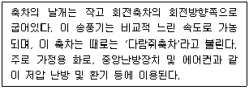
- 프로펠러형
- 방사 날개형
- 전향 날개형
- 방사 경사형
(정답률: 61%)
4과목: 대기환경 관계 법규
61. 대기환경보전법령상 초과부과금 산정시 다음 오염물질 1kg당 부과금액이 가장 큰 오염물질은?
- 불소화물
- 황화수소
- 이황화탄소
- 암모니아
(정답률: 58%)
62. 다음은 대기환경보전법령상 총량규제구역의 지정사항이다. ( )안에 가장 적합한 것은?
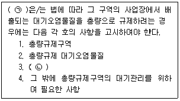
- ㉠ 대통령, ㉡ 총량규제부하량
- ㉠ 환경부장관, ㉡ 총량규제부하량
- ㉠ 대통령, ㉡ 대기오염물질의 저감계획
- ㉠ 환경부장관, ㉡ 대기오염물질의 저감계획
(정답률: 60%)
63. 대기환경보전법령상 개선명령 등의 이행보고 및 확인과 관련하여 환경부령으로 정한 대기오염도 검사기관과 거리가 먼 것은?
- 수도권대기환경청
- 시·도의 보건환경연구원
- 지방환경보전협회
- 한국환경공단
(정답률: 63%)
64. 대기환경보전법령상 대기오염물질 배출시설의 설치가 불가능한 지역에서 배출시설의 설치허가를 받지 않거나 신고를 하지 아니하고 배출시설을 설치한 경우의 1차 행정처분기준으로 옳은 것은?
- 조업정지
- 개선명령
- 폐쇄명령
- 경고
(정답률: 52%)
65. 실내공기질 관리법령상 실내공간 오염물질에 해당하지 않는 것은?
- 이산화탄소(CO2)
- 일산화질소(NO)
- 일산화탄소(CO)
- 이산화질소(NO2)
(정답률: 41%)
66. 대기환경보전법령상 시·도지사가 설치하는 대기오염 측정망의 종류에 해당하지 않는 것은?
- 도시지역의 대기오염물질 농도를 측정하기 위한 도시대기 측정망
- 도로변 대기오염물질 농도를 측정하기 위한 도로변대기측정망
- 대기 중의 중금속 농도를 측정하기 위한 대기중금속측정망
- 도시지역의 휘발성유기화합물 등의 농도를 측정하기 위한 광화학대기오염물질측정망
(정답률: 53%)
67. 대기환경보전법령상 자동차제작자는 자동차배출가스가 배출가스 보증기간에 제작차배출허용기준에 맞게 유지될 수 있다는 인증을 받아야하는데. 이 인증받은 내용과 다르게 자동차를 제작하여 판매한 경우 환경부장관은 자동차 제작자에게 과징금을 처분을 명할 수 있다. 이 과징금은 최대 얼마를 초과할 수 없는가?
- 500억원
- 100억원
- 10억원
- 5억원
(정답률: 61%)
68. 대기환경보전법령상 기본부과금 산정을 위해 확정배출량명세서에 포함되어 시·도지사 등에게 제출해야 할 서류목록으로 거리가 먼 것은?
- 황 함유분석표 사본
- 연료사용량 또는 생산일자
- 조업일자
- 방지시설개선 실적표
(정답률: 61%)
69. 대기환경보전법령상 위임업무 보고사항 중 자동차연료 제조기준 적합여부 검사현황의 보고 횟수기준으로 옳은 것은?
- 수시
- 연 1회
- 연 2회
- 연 4회
(정답률: 41%)
70. 악취방지법령상 위임업무 보고사항 중 “악취검사기관의 지정, 지정사항 변경보고 접수 실적”의 보고 횟수 기준은?
- 연 1회
- 연 2회
- 연 4회
- 수시
(정답률: 53%)
71. 대기환경보전법령상 2016년 1월 1일 이후 제작자동차 중 휘발유를 연료로 사용하는 최고속도 130km/h미만 이륜자동차의 배출가스 보증기간 적용기준으로 옳은 것은?
- 2년 또는 20000km
- 5년 또는 50000km
- 6년 또는 100000km
- 10년 또는 192000km
(정답률: 52%)
72. 다음은 대기환경보전법령상 오염물질 초과에 따른 초과부과금의 위반횟수별 부과계수이다. ( )안에 알맞은 것은?
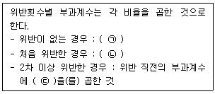
- ㉠ 100분의 100, ㉡ 100분의 1⑤, ㉢ 100분의 1⑤
- ㉠ 100분의 100, ㉡ 100분의 1⑤, ㉢ 100분의 110
- ㉠ 100분의 1⑤, ㉡ 100분의 110, ㉢ 100분의 1⑤
- ㉠ 100분의 1⑤, ㉡ 100분의 110, ㉢ 100분의 115
(정답률: 58%)
73. 대기환경보전법령상 청정연료를 사용하여야 하는 대상시설의 범위로 옳지 않은 것은?
- 산업용 열병합 발전시설
- 건축법 시행령에 따른 공동주택으로서 동일한 보일러를 이용하여 하나의 단지 또는 여러 개의 단지가 공동으로 열을 이용하는 중앙집중난방방식으로 열을 공급받고, 단지 내의 모든 세대의 평균 전용면적이 40.0m2를 초과하는 공동주택
- 전체 보일러의 시간당 총 증발량이 0.2톤 이상인 업무용보일러(영업용 및 공공용보일러를 포함하되, 산업용보일러는 제외한다.)
- 집단에너지사업별 시행령에 따른 지역냉난방사업을 위한 시설(단, 지역냉난방사업을 위한 시설 중 발전폐열을 지역냉난방용으로 공급하는 산업용 열병합발전시설로서 환경부장관이 승인한 시설은 제외)
(정답률: 65%)
74. 대기환경보전법령상 유해성 대기감시물질에 해당하지 않는 것은?
- 불소화물
- 이산화탄소
- 사염화탄소
- 일산화탄소
(정답률: 49%)
75. 악취방지법령상 악취방지계획에 따라 악취방지에 필요한 조치를 하지 아니하고 악취배출시설을 가동한 자에 대한 벌칙기준은?
- 1년 이하의 징역 또는 1천만원 이하의 벌금
- 500만원 이하의 벌금
- 300만원 이하의 벌금
- 100만원 이하의 벌금
(정답률: 54%)
76. 환경정책기본법령상 오존(O3)의 대기환경기준으로 옳은 것은? (단, 8시간 평균치 기준)
- 0.10ppm 이하
- 0.06ppm 이하
- 0.⑤ppm 이하
- 0.02ppm 이하
(정답률: 57%)
77. 환경정책기본법령상 초미세먼지 (PM-2.5)의 ㉠ 연간평균치 및 ㉡ 24시간 평균치 대기환경기준으로 옳은 것은? (단, 단위는 μg/m3)
- ㉠ 50 이하, ㉡ 100 이하
- ㉠ 35 이하, ㉡ 50 이하
- ㉠ 20 이하, ㉡ 50 이하
- ㉠ 15 이하, ㉡ 35 이하
(정답률: 49%)
78. 대기환경보전법령상 장거리이동대기오염물질 대책위원회에 관한 사항으로 거리가 먼 것은?
- 위원회는 위원장 1명을 포함한 25명 이내의 위원으로 성별을 고려하여 구성한다.
- 위원회의 위원장은 환경부차관이 된다.
- 위원회와 실무위원회 및 장거리이동 대기오염물질 연구단의 구성 및 운영 등에 관하여 필요한 사항은 환경부령으로 정한다.
- 소관별 추진대책의 수립·시행에 필요한 조사·연구를 위하여 위원회에 장거리이동대기오염물질연구단을 둔다.
(정답률: 56%)
79. 대기환경보전법령상 비산먼지 발생사업 신고 후 변경신고를 하여야 하는 경우로 옳지 않은 것은?
- 사업장의 명칭 또는 대표자를 변경하는 경우
- 비산먼지 배출공정을 변경하려는 경우
- 건설공사의 공사기간을 연장하려는 경우
- 공사중지를 한 경우
(정답률: 65%)
80. 대기환경보전법령상 자동차에 온실가스 배출량을 표시하지 아니하거나 거짓으로 표시한자에 대한 과태료 부과기준으로 옳은 것은?
- 500만원 이하의 과태료
- 300만원 이하의 과태료
- 200만원 이하의 과태료
- 100만원 이하의 과태료
(정답률: 32%)
최대지표농도 = (배출량 / (2πKyKzuH)) × (1 - e(-uH / 2Kzt))
여기서, 배출량 = 980000m3/day × 1200ppm = 1176000g/day
u = 6m/s
H = 60m
Ky = 0.15
Kz = 0.18
t = 24시간 = 86400초
따라서,
최대지표농도 = (1176000 / (2π × 0.15 × 0.18 × 6 × 60)) × (1 - e(-6 × 60 / (2 × 0.18 × 86400))) ≈ 177 ppb
따라서 정답은 "177"이다.